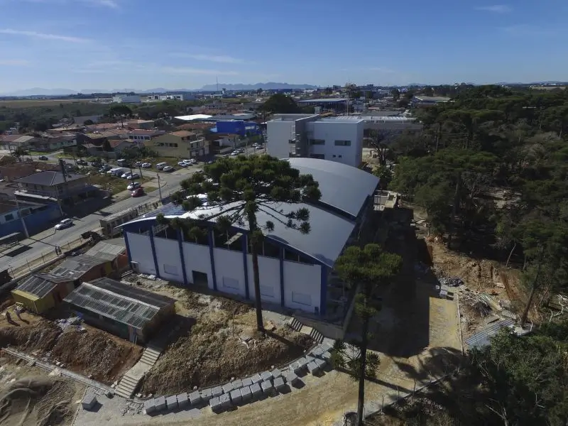
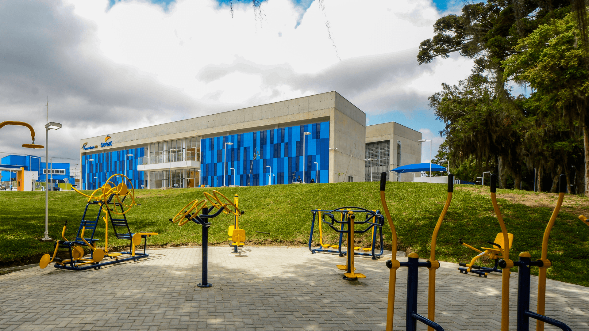
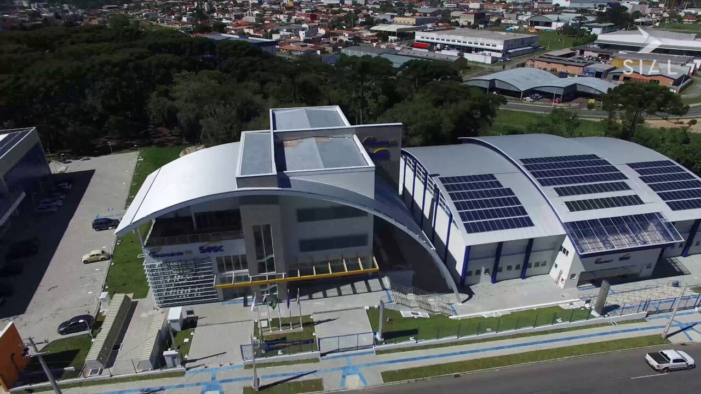
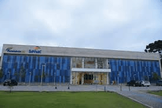
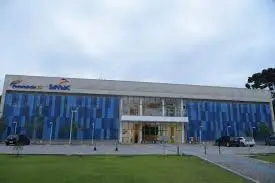

Vista do sesc em construção na resolução: 800x600 e Tamanho: 263kb

Vista do sesc em construção na resolução: 800x600 e tamanho: 60,6kb

Vista do sesc em construção na resolução: 800x600 e tamanho: 52,5kb

>Vista do sesc em construção na resolução: 800x600 e tamanho: 87,5kb

Vista para maquinas de exercicio e a lateral do sesc na resolução: 1920x1080 e Tamanho: 338kb

VVista para maquinas de exercicio e a lateral do sesc na resolução: 1920x1080 e Tamanho: 866kb

Vista para maquinas de exercicio e a lateral do sesc na resolução: 1920x1080 e Tamanho: 247kb

Vista para maquinas de exercicio e a lateral do sesc na resolução: 1920x1080 e Tamanho: 192kb
-
Vista de cima do sesc na resolução: 1280x720 e Tamanho: 200kb

Vista de cima do sesc na resolução: 1280x720 e Tamanho: 457kb

Vista de cima do sesc na resolução: 1280x720 e Tamanho: 109kb

Vista de cima do sesc na resolução: 1280x720 e Tamanho: 98,4kb

Fachada do senac na resolução: 1500x744 e Tamanho: 243kb

Fachada do senac na resolução: 1500x744 e Tamanho: 529kb

Fachada do senac na resolução: 1500x744 e Tamanho: 135kb

Fachada do senac na resolução: 1500x744 e Tamanho: 102kb

Lateral das janelas do senac na resolução: 275x183 e Tamanho: 5,92kb

Lateral das janelas do senac na resolução: 275x183 e Tamanho: 23,1kb

Lateral das janelas do senac na resolução: 275x183 e Tamanho: 4,48kb

Lateral das janelas do senac na resolução: 275x183 e Tamanho: 3,93kb